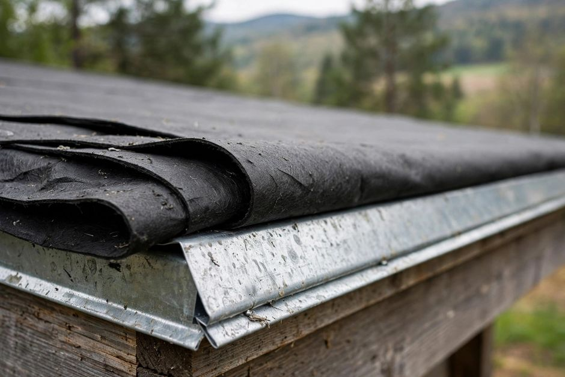
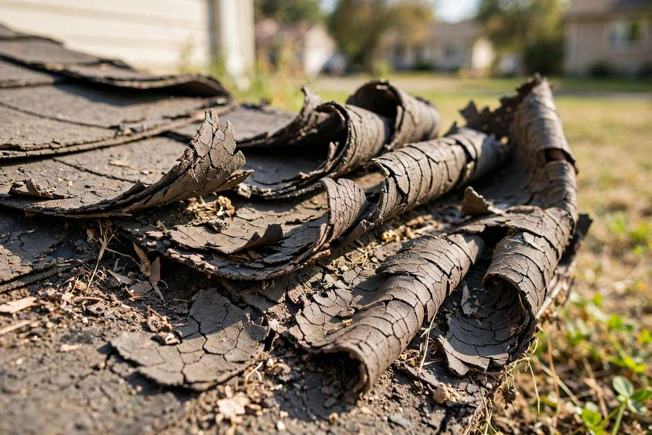

Damage documented too late
Undated or missing photographs make any claim harder to evidence. Document promptly, keep dates, and keep copies of everything.
Roof insurance claim help Des Plaines IL homeowners search for is usually a question about roles: what the homeowner does, what the insurer does, and what a roofer may and may not do. This page explains the process in general, lawful terms only. It is general information, not legal advice, and the statute text governs. For questions about documentation help, call (224) 802-4866 and ask what is available.
Call (224) 802-4866 during business hours and describe what you are seeing. Hours: Mon–Tue 7:30 AM–7:00 PM, Wed–Fri 7:30 AM–7:30 PM, Sat 8:30 AM–5:00 PM, Sun closed.
Call Now (224) 802-4866 → No online booking. No email. Phone calls only.
After storm damage, the process has a clear shape. The homeowner documents the damage promptly, with dated photographs. The homeowner files the claim with the insurer. A roofer can provide findings and a written estimate and documentation. The homeowner decides on any settlement. Repair then proceeds under a written contract. Each step has its own owner, and keeping the roles straight protects everyone involved — including the homeowner, whose claim it is.
Illinois law draws lines around the contractor's role. Under 815 ILCS 513/18(i), as summarised in secondary legal sources, a contractor shall not represent a homeowner on a claim, call in or file a claim on the insured's behalf, or inspect for exterior damage without the insured's express permission; the same subsection is summarised as not barring an estimate that may be submitted to the insurer, conferring with an insurer's representative about damage, or discussing repair or replacement options. This is general information, not legal advice. For storm damage itself, see storm damage roof repair; for how damage is assessed, see roof inspection.
Generic, lawful process education only. Nothing here interprets a policy, states a deadline or coverage rule, or promises any outcome.
Photograph damage as soon as it is safe to do so, with dates, and keep the photographs. Dated documentation is what an adjuster looks at, and it is the homeowner's record of what happened.
Filing the claim is the homeowner's step, with the homeowner's insurer. A contractor does not file the claim on the homeowner's behalf. Ask your insurer how and where to file.
A roofer can provide findings and a written estimate and documentation, which may be submitted to the insurer. Ask what documentation help is available when you call — this page does not claim adjuster meetings or supplement work.
As summarised in secondary legal sources, 815 ILCS 513/18(i) is not read as barring an estimate, conferring with an insurer's representative about damage, or discussing options. Representing the homeowner on a claim is a different matter, and is not a contractor's role.
Any settlement decision belongs to the homeowner. No outcome is promised on this page, and no page on this site interprets a policy or states what an insurer will pay.
Repair proceeds under a written contract showing the scope of work. Roofing contracts in Illinois must state that the contractor cannot pay, waive or rebate any part of a deductible where payment is from insurance proceeds (225 ILCS 335/5.5). Ask for the contract in writing before work starts.
Call (224) 802-4866 and describe the damage and whether a claim is involved. Ask what documentation help is available — findings, a written estimate, photographs — and what the next step would be. This page does not claim that the business meets adjusters or prepares supplement paperwork.
Photograph damage promptly and keep dated records. Ask what findings and documentation would be provided, and how they would be shared with you.
File the claim with your insurer as the homeowner. Keep copies of everything you send and receive, and note the names and dates of conversations.
Any settlement decision is yours. Ask questions of your insurer until you understand the offer, and do not treat anything on this site as an interpretation of your policy.
If repair or replacement goes ahead, agree it under a written contract showing the scope. See the roof replacement page for the wider job, and keep the contract with your claim records.
The rules below are stated only as the sources state them, attributed and qualified. This is general information, not legal advice, and the statute text governs.
Under 815 ILCS 513/18(i), as summarised in secondary legal sources, a contractor shall not represent, or offer or advertise to represent, a homeowner on any insurance claim in connection with roof work. Negotiating or settling a claim requires a public-adjuster licence, which is a separate licence.
Under the same subsection, as summarised, a contractor shall not call in or file a claim on the insured's behalf. Filing is the homeowner's step.
Under the same subsection, as summarised, a contractor shall not climb on a roof or inspect for exterior damage without the insured's express permission. Permission comes first.
The same subsection is summarised as not barring an estimate that may be submitted to the insurer, conferring with an insurer's representative about damage, or discussing repair or replacement options. This is a summary of secondary sources, not legal advice.
Illinois law prohibits advertising or promising to pay or rebate any portion of a deductible, and roofing contracts must state that the contractor cannot pay, waive or rebate any part of a deductible where payment is from insurance proceeds (225 ILCS 335/5.5). No deductible figure is stated on this page.
Nothing on this page interprets a policy, states a claim deadline or coverage rule, or states any cancellation period. Sources describe cancellation rights differently, so no period is stated here. The statute text governs; consult a lawyer for legal advice.
A storm passes, granules appear in the gutters, and a stain shows on a ceiling days later. The homeowner is unsure what happened or what to do first.
Document promptly with dated photographs, file the claim yourself, and ask what documentation help is available when you call. See the storm damage page for the wider process.
The insurer asks for an estimate, or the homeowner wants findings in writing before deciding anything.
Ask for findings and a written estimate and documentation. An estimate that may be submitted to the insurer is summarised as not barred; representing the homeowner is not a contractor's role.
The insurer makes an offer, and the homeowner must decide whether it covers the repair or replacement the roof needs.
The decision is the homeowner's. Ask the insurer questions until the offer is understood, and agree any repair under a written contract. No outcome is promised here.
These are process problems, described in general terms. None of them is resolved by a promise on this page.
Ask a pro →Undated or missing photographs make any claim harder to evidence. Document promptly, keep dates, and keep copies of everything.
When it is unclear who files, who estimates and who decides, the process stalls. The homeowner files and decides; the roofer provides findings and an estimate.
Any promise to pay, waive or rebate part of a deductible is prohibited advertising in Illinois, and contracts must state that the contractor cannot do so where payment is from insurance proceeds. Treat any such promise as a warning sign.
Verbal agreements leave scope, price and responsibility unclear. Agree repair under a written contract, and keep it with your claim records.
“I use WP Exteriors to repaint my roof and do as some tuckpointing on the exterior of my building. Pat and his team were very professional and communicative. They did a good job explaining what needs to be done to my home immediately and what I can plan for in the future. I will definitely be using them in the future.”
Patricia Murray2 months ago · Google review
✓ Google review“Patryk was great to work with and extremely professional. I highly recommend WP exteriors and plan on using them again in the future!”
Brian Avila Gaona5 months ago · Roof inspection · Google review
✓ Google review“Thank you Patrick for doing an amazing job. Great work me and my wife are very happy. Also thanks for being reliable.”
Phil Negron2 months ago · Gutter repairs · Google review
✓ Google reviewThe homeowner files the claim with the insurer. Under 815 ILCS 513/18(i), as summarised in secondary legal sources, a contractor shall not call in or file a claim on the insured's behalf. This is general information, not legal advice, and the statute text governs.
A roofer can provide findings and a written estimate and documentation. The same subsection is summarised as not barring an estimate that may be submitted to the insurer, conferring with an insurer's representative about damage, or discussing repair or replacement options. Ask what documentation help is available when you call (224) 802-4866. This page does not claim adjuster meetings or supplement work.
No. Illinois law prohibits advertising or promising to pay or rebate any portion of a deductible, and roofing contracts must state that the contractor cannot pay, waive or rebate any part of a deductible where payment is from insurance proceeds (225 ILCS 335/5.5). No deductible figure is stated on this page.
This page cannot answer that. No policy is interpreted here, no coverage rule or claim deadline is stated, and no outcome is promised. Coverage depends on the policy and the insurer's decision. Ask your insurer, and agree any repair under a written contract.

Roof RepairLeak repair, flashing and the repair-or-replace decision, explained for Des Plaines roofs.Explore → Roof ReplacementFull tear-off and replacement, the code and climate angles for Des Plaines, and how repair and replacement compare.Explore →
Roof ReplacementFull tear-off and replacement, the code and climate angles for Des Plaines, and how repair and replacement compare.Explore →
Roof InspectionWhat an inspection covers, when one matters locally, and how findings are shared in writing.Explore → Flat Roof RepairLow-slope systems, seams, ponding and tie-ins, with repair-or-replace questions to ask.Explore →
Flat Roof RepairLow-slope systems, seams, ponding and tie-ins, with repair-or-replace questions to ask.Explore → Emergency Roof RepairActive leaks and storm breaches: what stabilisation means, safety while waiting, and honest scope limits.Explore →
Emergency Roof RepairActive leaks and storm breaches: what stabilisation means, safety while waiting, and honest scope limits.Explore → Storm Damage Roof RepairHail and wind damage in one place: mechanisms, documentation, and the lawful contractor role.Explore →
Storm Damage Roof RepairHail and wind damage in one place: mechanisms, documentation, and the lawful contractor role.Explore → Metal RoofingStanding seam and exposed-fastener systems, climate fit, and attributed guide lifespans and costs.Explore →
Metal RoofingStanding seam and exposed-fastener systems, climate fit, and attributed guide lifespans and costs.Explore → Skylight InstallationSkylight replacement, reflashing and leak sources, with fixed and venting units explained.Explore →
Skylight InstallationSkylight replacement, reflashing and leak sources, with fixed and venting units explained.Explore →Call (224) 802-4866 during business hours to describe the damage and ask what documentation help is available. Hours: Mon–Tue 7:30 AM–7:00 PM, Wed–Fri 7:30 AM–7:30 PM, Sat 8:30 AM–5:00 PM, Sun closed. This page is general information, not legal advice.
Call (224) 802-4866 →Call (224) 802-4866 to talk about your roof. Describe what you are seeing — a leak, a stain, damage after a storm — and ask what help is available and what the next step would be. There is no online booking and no email contact. Hours: Mon–Tue 7:30 AM–7:00 PM, Wed–Fri 7:30 AM–7:30 PM, Sat 8:30 AM–5:00 PM, Sun closed. The office is at 638 Birchwood Ave, Des Plaines, IL 60018.